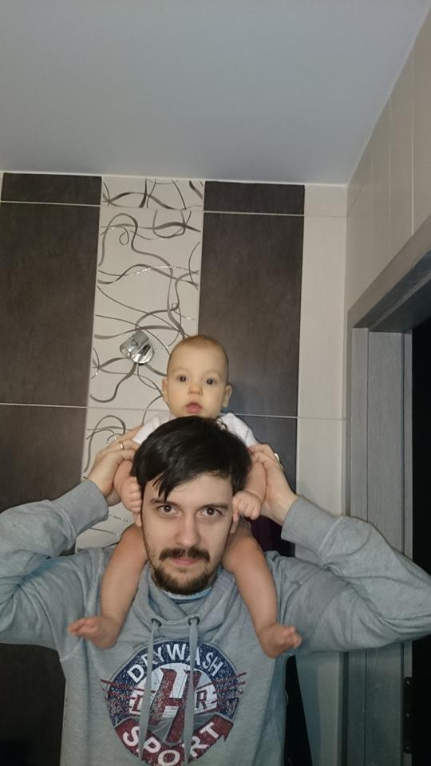

O mnie
Jestem fanem Transformersów od początku lat 90-tych XXw. Niestety żadna z moich ówczesnych zabawek nie dotrwała do chwili obecnej. Mnie mniej, postanowiłem zarazić moją pasą syna i mam nadzieję, że jak trochę podrośnie to będziemy mieli czym razem bawić. Pierwsze kroki w tym kierunku już poczynił. Lubi jak mu się daje Transformersy zmienione w samochody :)
